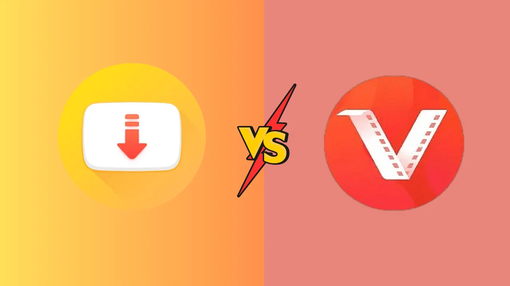

In a world where keeping ourselves entertained often means finding ways to save our favorite videos for offline viewing, SnapTube and Vidmate are two of the top contenders. These apps have carved out a niche for themselves, thanks to their ability to download videos from popular sites like YouTube. With YouTube limiting offline viewing for free users, SnapTube and Vidmate step in to fill the gap, making life easier for those who want to watch videos without the hassle of buffering.
But which app is right for you? In this article, we'll compare SnapTube and Vidmate to help you make an informed choice. From features to differences, and even a sprinkle of humor, we’ll cover it all.
Both SnapTube and Vidmate are popular choices among users who want to download videos from various platforms. These apps aren't available on the Google Play Store (surprise, surprise), but don't worry—you can choose snaptube download or vidmate from their official websites. Though they may seem similar at first glance, each app has its quirks, perks, and a few downsides. Let’s dive into their similarities before we pick them apart like a heated game of tug-of-war.
Despite being competitors, SnapTube and Vidmate have a lot in common. They offer a variety of features that appeal to users who love convenience. Let’s break them down:
One thing both SnapTube and Vidmate excel at is letting you stream or download videos at your convenience. Whether you’re on the go and want to watch something later or just trying to avoid using your mobile data, these apps have your back.
Downloading videos from social media? Piece of cake. Whether you’re trying to save that hilarious cat video from Facebook, Instagram, or WhatsApp statuses, SnapTube and Vidmate make it simple. Just a few taps, and it’s saved for eternity (or until you need the space).
Both apps come with a built-in vault feature, so you can lock your downloads away from prying eyes. Want to keep that cringy karaoke performance just for yourself? SnapTube and Vidmate can keep it under wraps.
Both apps also offer night mode. Whether you're saving your eyes during a midnight video binge or just prefer the darker aesthetic, night mode is your friend.
Now that we've seen what makes SnapTube and Vidmate similar, let’s dive into what makes them different. Because let’s be honest—those differences can make or break the deal.
Vidmate offers a wider range of supported platforms, including Pinterest, and even some 18+ content (yes, you read that right) if you're into that. SnapTube, on the other hand, skips the adult content and provides a cleaner interface.
Vidmate also offers a unique “separate apps” feature, which is essentially a shortcut to other apps you can download through Vidmate. Handy? Sure. But here's the catch: those apps often come from third-party sources and can raise privacy concerns. SnapTube skips this whole circus, sticking to its core functionality without any extra baggage.
Got some time to kill? Vidmate lets you play games within the app itself. SnapTube doesn’t offer this feature—so if you’re a fan of casual gaming, Vidmate might win some extra points here.